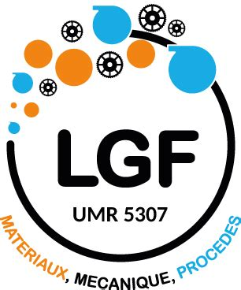
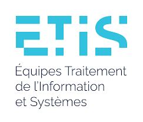
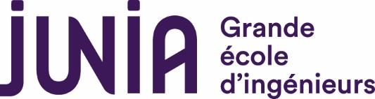

Cascade
Within this project led by partners
LGT (Szilvia Kalacska, Guillaume Kermouche) and
ETIS (Alexandre Pitti) , focused on K. Lukacs' PhD, I will help develop sonification methods (coupled with perception tests) for displaying data resulting from material fracturing in lab conditions... more soon!


